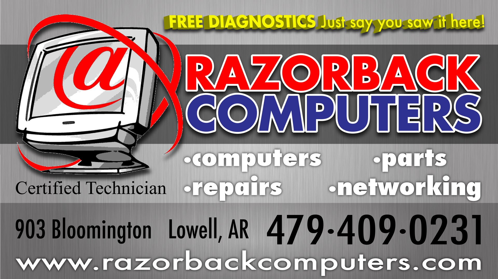

Welcome to Razorback Computers!
Razorback Computers is your trusted destination for all your computer repair and diagnostic needs. Established with a mission to provide reliable solutions and exceptional service, we specialize in diagnosing and repairing a wide range of computer issues, from hardware malfunctions to software glitches.
Our team of certified technicians brings years of expertise and a passion for technology to every repair. Whether you're dealing with a slow performance, a virus infection, or a broken screen, we are here to help you get your device back up and running smoothly.
At Razorback Computers, customer satisfaction is our top priority. We strive to deliver prompt and professional service, ensuring that each repair is completed with meticulous attention to detail. Our commitment to quality extends beyond repairs; we also offer comprehensive diagnostic services to pinpoint underlying issues and prevent future problems.
Visit our store today or contact us to learn more about our services and how we can assist you with all your computer repair needs. Trust Razorback Computers to keep your technology running seamlessly.
